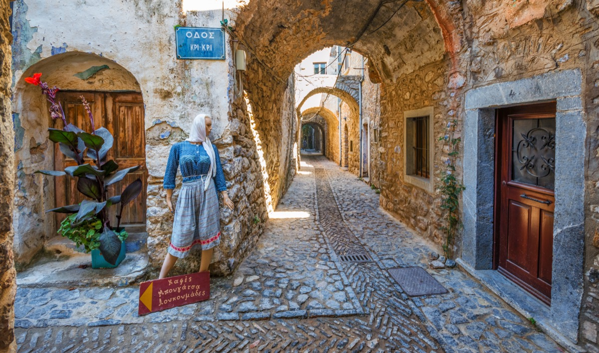

Çoğu ziyaretçi Chora ve güneydeki sakız köyleriyle yetinse de, adanın kuzeyi ve iç kesimleri tamamen farklı, çok daha sakin bir Sakız sunuyor.
Vrontados — Homeros'un İzi

Chora'ya çok yakın olmasına rağmen sakin bir kasaba havası taşıyan Vrontados, denizcilik geleneğiyle tanınıyor; birçok ünlü Yunan armatör ailesi buradan çıkmış. Kasabanın simgesi, Homeros'un burada ders verdiğine inanılan Daskalopetra (Homeros Kayası) ve kıyı boyunca sıralanan tarihi yel değirmenleri. Sahildeki küçük koylarda, özellikle Karinda gibi sakin koylarda denize girebilirsiniz.
Anavatos — Hayalet Köy
Adanın iç kesiminde, sarp bir kayalığın üzerine kurulmuş Anavatos bugün neredeyse tamamen terk edilmiş durumda. 1822'deki katliam sırasında köy halkının kayalıklardan atlayarak canlarına kıydığı söyleniyor. Kayalarla bütünleşen taş evleri görmek için adeta zamanda donmuş bir yere adım atmış gibi hissedersiniz — hem etkileyici hem de derin biçimde hüzünlü bir atmosfer.
Volissos — Kuzey'in Kalesi
Adanın en kuzeyindeki bu köy, Bizans dönemine ait kalesiyle dikkat çekiyor. Turist akınına uğramamış olması, otantik bir Ege köyü atmosferi yaşamak isteyenler için büyük avantaj. Yakınındaki Limnia ve Managros gibi küçük balıkçı koyları da gün batımı için harika noktalardır.
Kambos — Portakal Bahçelerinin Gizemi
Chora'nın hemen güneyinde, yüksek taş duvarlarla çevrili portakal ve mandalina bahçeleri arasında saklı bu bölge, Cenevizli ve Osmanlı dönemlerinden kalma konaklar barındırıyor. Yüksek duvarların ardındaki tarihi malikanelerin bazıları bugün butik otel olarak hizmet veriyor — oldukça özel bir konaklama deneyimi.
Lagada — Denizci Köyü
Doğu kıyısında, sakin bir dalyan köyü olan Lagada, taze balık ve deniz ürünleri restoranlarıyla biliniyor. Turistik kalabalıktan uzak, yerel halkın hafta sonu kaçamağı yaptığı, gerçek anlamda "keşfedilmemiş" bir nokta.
Olympi ve Armolia
Pyrgi ve Mesta kadar bilinmeyen ama benzer "xysta" desenli evlere sahip bu köyler, sakız üretiminin yanı sıra geleneksel seramik sanatıyla da öne çıkıyor. Armolia'da köy meydanındaki seramik atölyelerinden özgün hediyelik alabilirsiniz.
Bu keşfedilmemiş noktaların tamamı ve daha fazlası için GuideChios.com'a göz atın — adayı gerçekten bilen, yerel bilgiyle hazırlanmış en kapsamlı Chios rehberi.